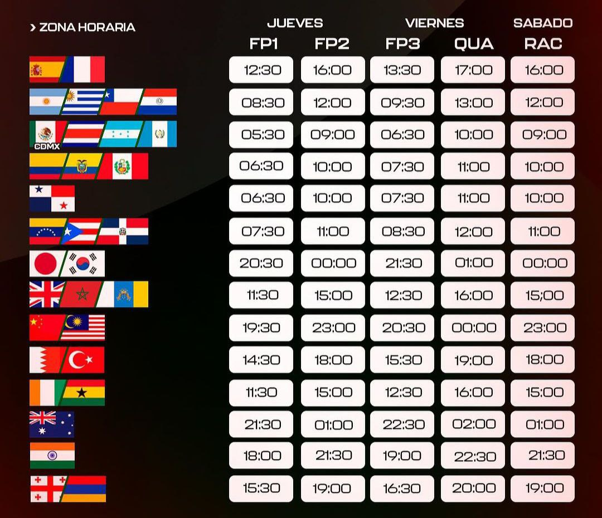
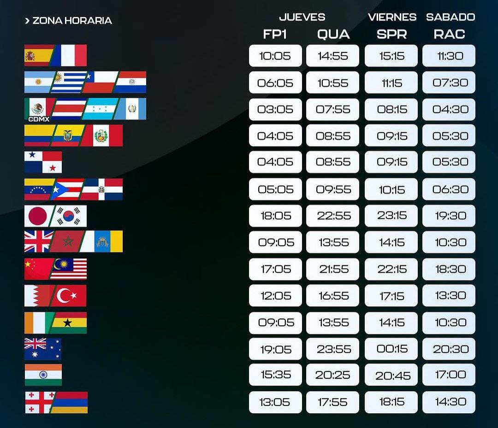
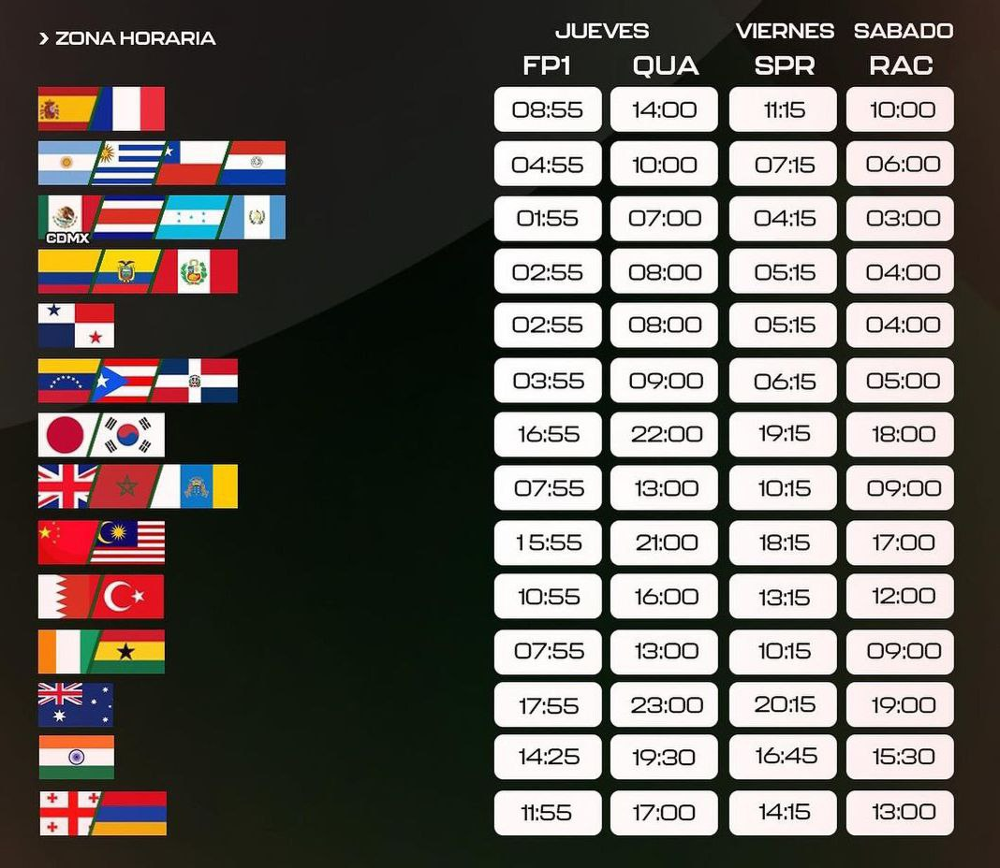

Previa del Gran Premio Baréin
Por fin empieza la acción en pista, aunque como novedad y debido al ramadan, sera de Jueves a Sábado. Debido a que en ramadan no se pueden realizar grandes eventos como la formula uno. Debido a eso se adelanto en Gran Premio de Arabia Saudi y debido a la normativa en la cual tiene que haber 7 días entre Gran Premio, adelantando también el Gran Premio de Baréin.
Acabados los test de pretemporada, va a ser la primera que veamos fuego real el viernes en qualy y sepamos donde esta cada monoplaza y cada escuderia de cara a la carrera del Sábado. Favorito tras lo visto hasta ahora el actual campeón Max Verstappen, a falta de lo que diga Ferrari sobre la pista siendo la unica alternativa aparente hasta el momento, sobre todo a una vuelta.
  